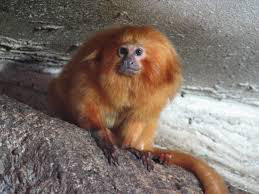

Ploskonosí (Platyrrhini, Ceboidea), nebo také opice ploskonosé nebo opice Nového světa, je jedno ze dvou oddělení infrařádu opic (Simiiformes). Druhým je úzkonosí, opice úzkonosé, neboli opice Starého světa. Někdy je pro zařazení ploskonosých a úzkonosých používán taxon parvorder nebo falanx, zde je použito české pojmenování oddělení.
Jsou to opice rozličných velikostí, od kosmana zakrslého velikého okolo 15 cm po chápanovité měřící až 90 cm a vážící okolo 10 kg. Od svých příbuzných úzkonosých se na první pohled liší širokou nosní přepážkou mezi nozdrami směřujícími do stran. Při čelním pohledu, odmyslíme-li různá ochlupení, vypadá jejich hlava širší, při bočním je zase protáhlejší. Mají dobrý zrak a prostorové vnímání, až na mirikinovité vidí barevně. Sluch mají také dobrý, pouze čich je redukovaný. Samice má jeden pár prsních bradavek a zjevný menstruační cyklus.
Dalším významným znakem je mohutný ocas, u mnoha rodů je chápavý, s hmatovou plochou, nejvíce je tato vlastnost rozšířena u chápanovitých, kteří jej používají jako pátou končetinu a také ještě u malpovitých. Nutno zmínit i vřešťany, kteří díky hrdelnímu rezonátoru jsou považování za jedny z nejhlasitějších živočichů. Téměř všechny ploskonosé opice, až na kosmanovité, mají na rozdíl od úzkonosých, tj. i od lidí, 36 zubů, zubní vzorec je 2,1,3,3 (2 řezáky 1 špičák, 3 třenové zuby a 3 stoličky).
